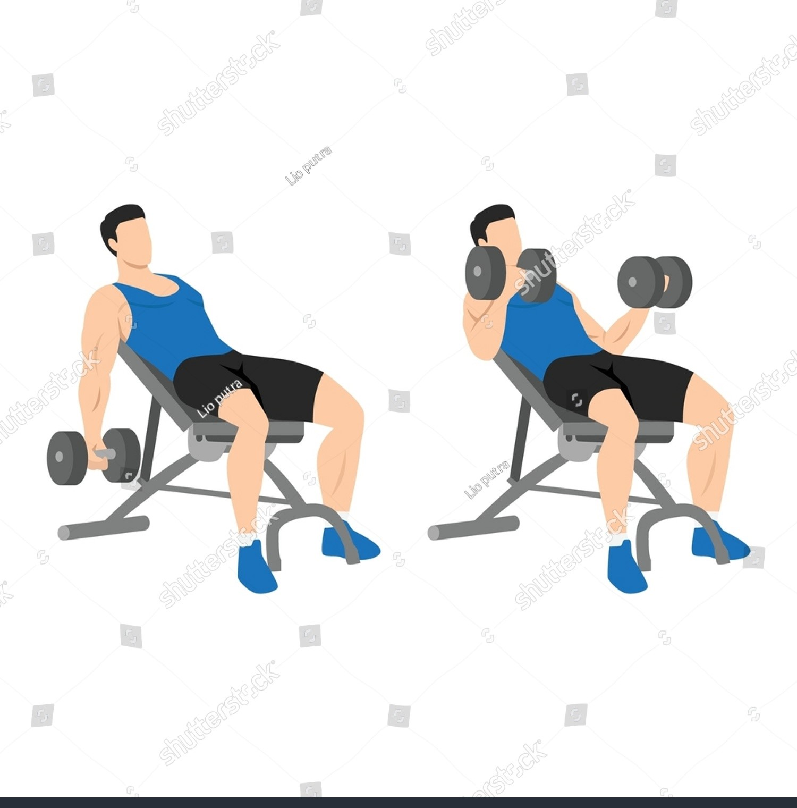

Exercise Description
Sit on an incline bench with your back supported and hold a dumbbell in each hand with an underhand grip. Let your arms hang down fully extended, then curl the dumbbells up towards your shoulders, keeping your elbows stationary.
Reps and Sets
Beginners: 3 sets of 12-15 reps
Weights: 10-15 kg dumbbells per hand
Rest time between each set: 1min
Video Implementation